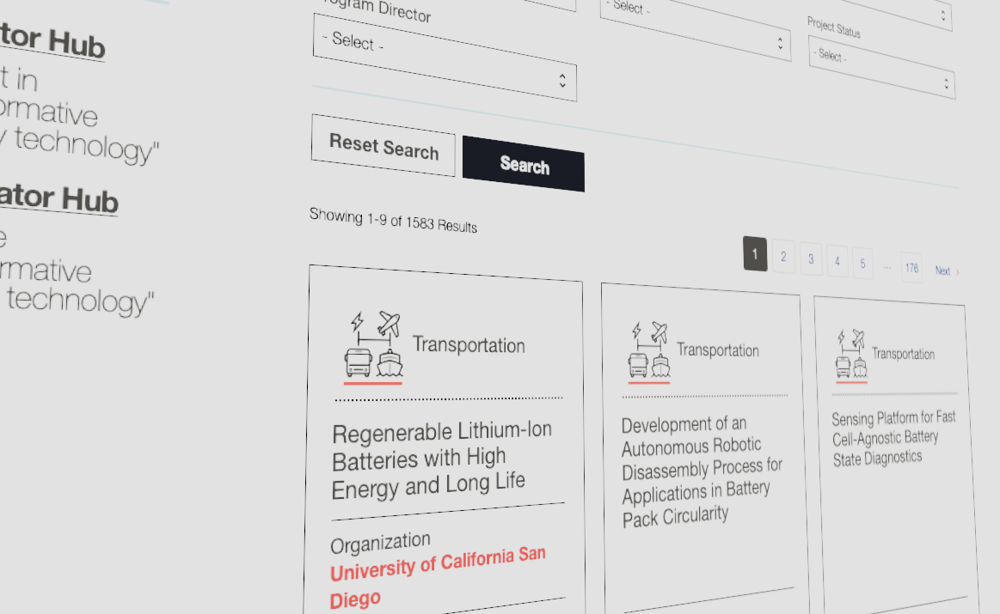
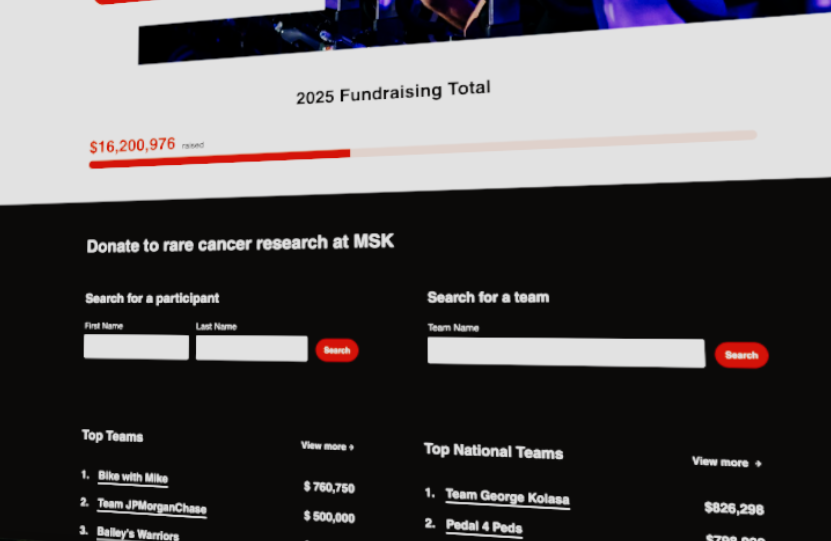

Portfolio

Major technology stack
- React.js front end
- API layer, compiled into JSON
- Drupal/PHP CMS back end
Special accomplishments
- Architected a platform intended to support a combination of live feeds, static feeds, and editorial content:
- A live JSON feed of federal data for programs and projects, rendered in React app
- A spreadsheet-based feed of data periodically uploaded to CMS for potential edits
- Site editorial content, rendered in React app, to use a component-based page structure
- Created a cached feed of CMS data, rendered in React app, based on page editorial requirements
- Utilized calculated data values to minimize user-added values in CMS fields
- Used the United States Web Design System (USWDS) used as a base design layer in React app

Major technology stack
- API layer of customer donation data, compiled into JSON
- Drupal/PHP CMS back and front end as a multi-site platform
Special accomplishments
- Enhanced a platform intended to support a combination of customer donation data, customer information, and editorial content
- Created a design system to support the front-end patterns of four similar donation websites